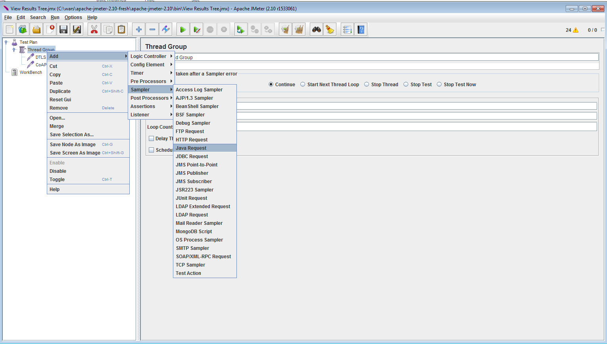
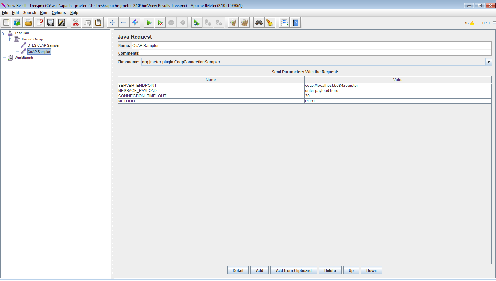
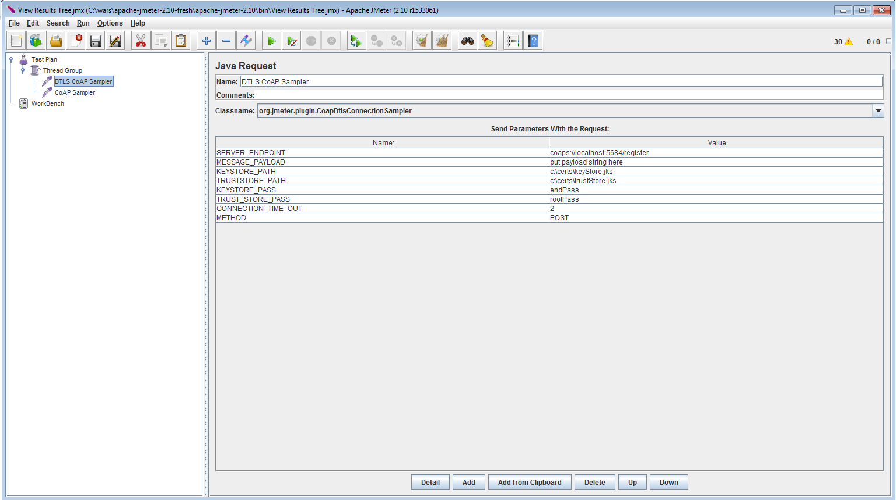

CoAP Protocol Testing Using JMeter For IOT Projects
CoAP (Constrained Application protocol) is an application layer protocol intended for use in resource constrained environments like in low power electronic devices and other electrical appliances which needs to be able to send and receive instructions remotely.
CoAP is a good candidate to build services for an IoT (Internet of Things) framework to help devices talk to remote application or servers.
Californium is a Java Library which can be used to setup API endpoints in your application which operate using the Constrained Application Protocol.
There are also CoAP implementations that can be used on hardware chips to enable communication with the server.
Jmeter-coap-Sampler is a Jmeter plugin which can be used for Automation testing or Load testing your API endpoints implemented in CoAP.
There are separate samplers to test DTLS endpoints and non DTLS endpoints.
Pre-requisite
1. Java 7
2. Maven 2.x+
3. Jmeter 2.10+
Installation Instructions
1. Get the code.
2. Execute the following maven code
5. Copy the following jar from target/ to /jmeter_install_path/lib/ext
1. jmeter-coap-sampler-1.0.0.jar
Using the Sampler
1. Open JMeter.
2. Add a new Thread Group.
3. Right click on the Thread Group -> Add -> Sampler -> Java Request
4. Choose the Java Request from the navigation panel.
5. Click on the 'classname' drop down and choose between

Fig 1: Creating a Java Request

Fig 2: CoAP sampler without use of DTLS(Datagram transport layer security)

Fig 3: DTLS(Datagram transport layer security) protected endpoint sampler